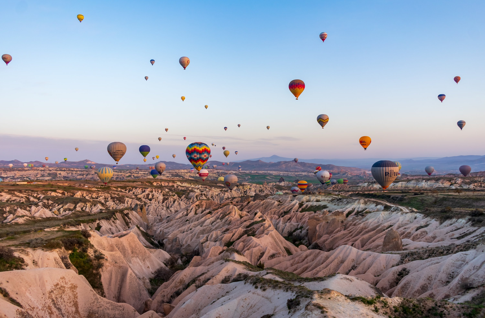

PAKISTAN

The Skardu Valley is beautiful due to its tall pine trees, pure water springs, patchwork mountains, and long pine trees. It is one of the most popular places for hikers because it lies outside of the Karakoram Mountains, which are enormous mountain peaks.The Skardu Valley, which links Pakistan with China, India, and Afghanistan, has unusual geographical characteristics. When we speak of the locals, we refer to their genuine friendliness and care. There, you can have some pretty delicious native cuisine. Amazing resorts and hotels are available to reserve in some of the best locations with breathtaking scenery.
TURKEY
The size of Cappadocia's underground cities, cathedrals, and other spectacular rock formations is just amazing.In the area, there are a large number of underground structures. The eight-level Kaymakli and the 55-meter-diameter Derinkuyu are two of the most notable. The Cappadocian region's capital, Nevsehir, is a fantastic site to base yourself when travelling there.
INDONESIA

The most well-known Indonesian tourist destination in the world is Bali Island, a small yet stunning island that is a part of the Indonesian archipelago. This island is exclusive compared to others because of its beautiful scenery and distinctive culture. Additionally, it is situated in a tropical environment, making it a dream island to visit. Bali Island features a lot of interesting locations, including rice fields, stunning views, volcanoes, and tourist attractions.